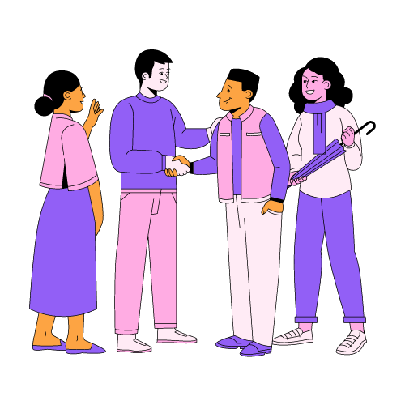

¡Bienvenido a mi Portafolio Digital!
Soy Antonio Vázquez Montalban, estudiante de IBERO Puebla en la carrera de Ingeniería en Sistemas.


¡Bienvenido a mi Portafolio Digital!
Soy Antonio Vázquez Montalban, estudiante de IBERO Puebla en la carrera de Ingeniería en Sistemas.
Gustos:
Habilidades:

Investiga y documenta los puntos más destacables de StackOverflow Developer Survey 2022.
Investiga y documenta puntos importantes de los componentes de una página web.
Primera versión sobre el sitio web informativo sobre mi en HTML.
Segunda versión sobre el sitio web informativo sobre mi, agregando CSS y NavBars con Bootstrap.
Crea una cuenta de github y sube tu primer repostiorio del portafolio.
Busca el diseño de una página web de tu agrado, analizala, intenta copiarla y súbela a un nuevo repostiorio.
Desarrolla un programa que calcule: área, perímetro y tipo de triángulo, con solo los lados.
Busca las aplicaciones más usadas e investiga: año de lanzamiento, país de origen, bibliotecas y frameworks.
Crea un nuevo repositiorio en el que subas la página que copiaste actualizada.
Sube en teams una captura de pantalla de tu entrega de proyecto de vida (clase de taller Integra)
Sube a tu repositorio en GitHub tu última página web (portafolio digital). Tambien deberás crear un documento donde expliques parte del proceso de tu portafolio, que lenguajes y/o tecnologías usaste y principalmente, el enlace a tu página.


Algunas formas de ponernos en contacto